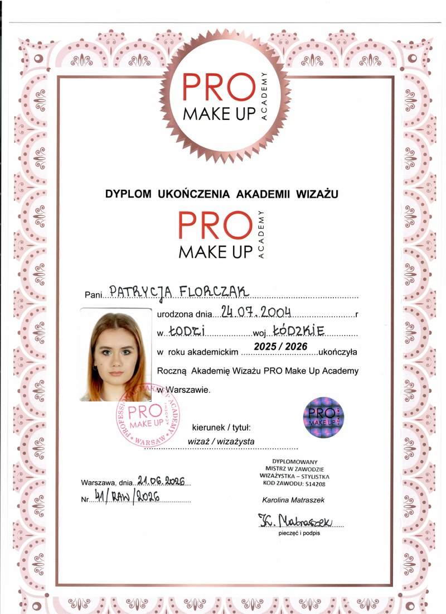
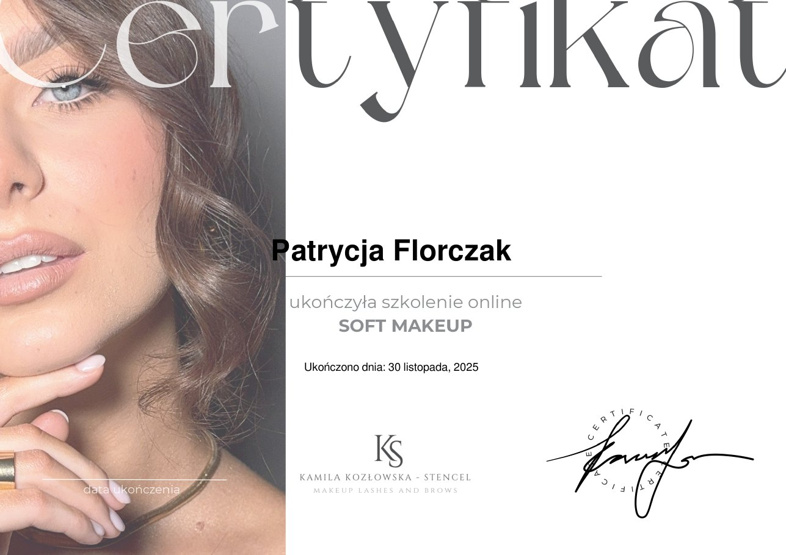
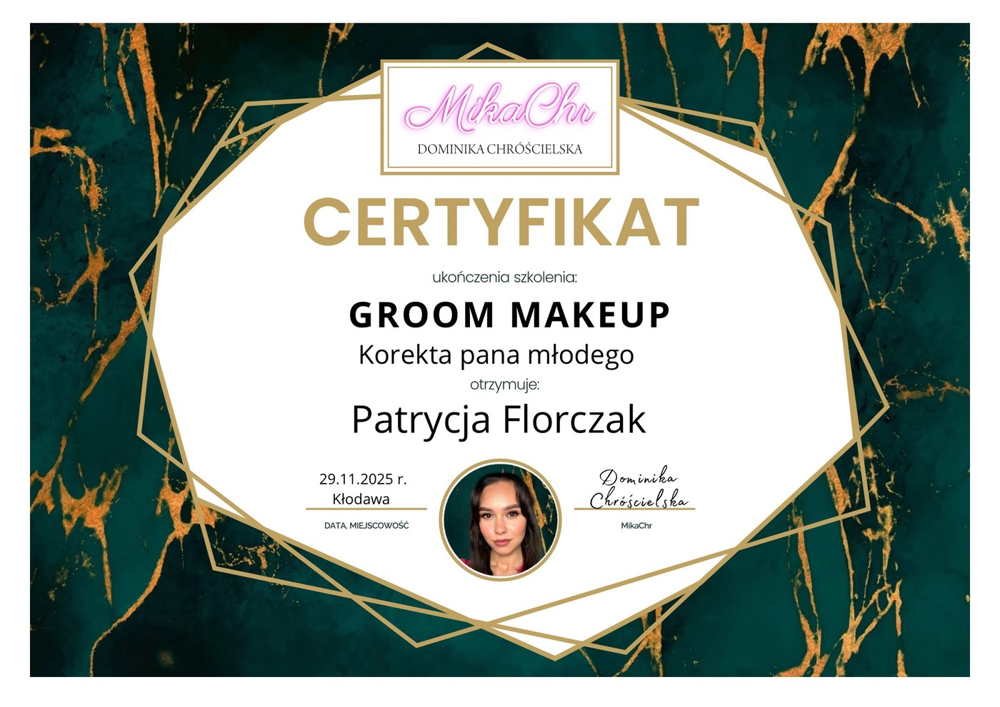
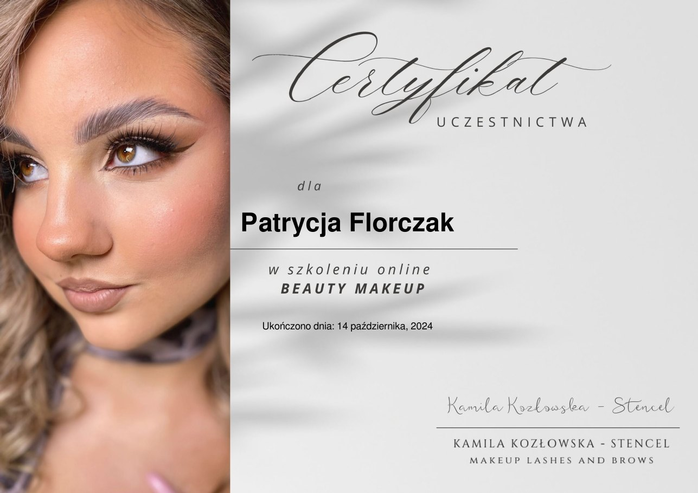

Indywidualne podejście
Każdy makijaż dopasowuję do urody, stylu i oczekiwań osoby, która mi zaufała.
Wizażystka · Bełchatów
Nazywam się Patrycja Florczak. Tworzę makijaże, które podkreślają charakter, wydobywają naturalne piękno i sprawiają, że każda osoba przed moim lustrem czuje się wyjątkowo.
Kilka słów o mnie
W makijażu najbardziej cenię harmonię - dobieram kolory, wykończenie i intensywność tak, aby całość współgrała z urodą, osobowością i okazją.
Stale rozwijam swój warsztat, poznaję nowe techniki i dbam o każdy detal. Ważna jest dla mnie nie tylko trwałość makijażu, ale też spokojna, komfortowa atmosfera podczas spotkania.
Każdy makijaż dopasowuję do urody, stylu i oczekiwań osoby, która mi zaufała.
Precyzja, estetyka i dobre przygotowanie skóry są dla mnie podstawą pięknego efektu.
Regularnie szkolę się i poszerzam wiedzę, by oferować świeże, dopracowane techniki.
Wiedza i doświadczenie
Każde szkolenie to kolejny krok w rozwijaniu techniki i jeszcze lepszym rozumieniu makijażu.

PRO Makeup Academy · Warszawa
Zobacz dyplom ↗
Kamila Kozłowska-Stencel
Zobacz certyfikat ↗
MikaChr · Korekta pana młodego
Zobacz certyfikat ↗
Kamila Kozłowska-Stencel
Zobacz certyfikat ↗Zróbmy coś pięknego